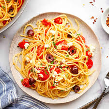

Spaghetti Bolognese

Spaghetti Bolognese is a rich, hearty Italian dish made with a
tomato-based meat sauce served over al dente spaghetti. The sauce
typically includes ground beef or pork, onions, garlic, and a blend of
herbs and spices. This comforting classic is perfect for family dinners
and gatherings.
Ingredients
- Spaghetti
- Ground beef or pork
- Onion
- Garlic
- Carrot
- Celery
- Tomato sauce (or crushed tomatoes)
- Tomato paste
- Olive oil
- Red wine (optional)
- Fresh basil and oregano
- Parmesan cheese
- Salt and pepper
Steps
-
Heat olive oil in a large pan and sauté the onions, garlic, carrot, and
celery until softened.
- Add the ground beef and cook until browned.
-
Stir in the tomato paste and cook for 2 minutes, then add tomato sauce
and optional red wine.
-
Season with fresh basil, oregano, salt, and pepper. Let the sauce simmer
for 30 minutes.
-
In the meantime, cook the spaghetti according to the package
instructions.
-
Drain the spaghetti and serve with the Bolognese sauce on top. Sprinkle
with Parmesan cheese.